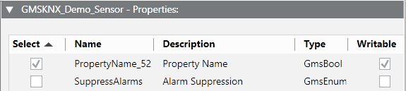
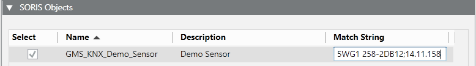

Creating a Collection of KNX Devices and Its Object Model
- In PVSS, the PVSS type for the new object model was created and configured.
NOTE: The object model data must follow exactly the documentation of the specific device (type and subtype) Additionally, the name of each property must be composed as follows: [name of the property]_[ID of the property taken from the device documentation]. For example, PropertyName_52.
- Select Project > System Settings > Libraries > L4-Project or L3-Region or L2-Country > Building Automation > Device > KNX > Object Model.
- In the Models and & Functions tab, click New Object Model or Function
 .
. - In the New Object Model creation dialog box, do the following:
a. Select the PVSS type for the new object model.
b. Click OK. - Click Save
 .
. - Select Project > System Settings > Libraries.
- Select the SORIS tab.
- Drag the KNX object model from System Browser into the SORIS Objects expander.
- In the SORIS Objects expander, select the object model.
- In the [KNX object model] – Properties expander, select the required properties.

- In the Match String field, specify the association between the current object model and KNX devices.
NOTE: The adapter will validate the exact IP address or the name of the device type.
Also, the same rules as a regular expression apply to the Match String field. For example, 14.11.* means all the devices included in the area will use the current object model, *11.* means all the devices included in line 11 will use the current object model, and so forth. 
- Click Save .
- The relevant OWL file (a file with extension .owl) is created in [Installation Drive]:\[Installation Folder]\[Project Name]\EM\KNX\SORISFiles.
- Copy and paste this file to the data models adapter installation folder [Installation Drive]:\[Installation Folder]\[Project Name]\EM\KNX\Build\Bin\DataModels.
- When you start the adapter, the group address elements of this device will be displayed as properties in the Operation tab. If you switch to the logical view, this device is included under the object that acts as container for those devices.